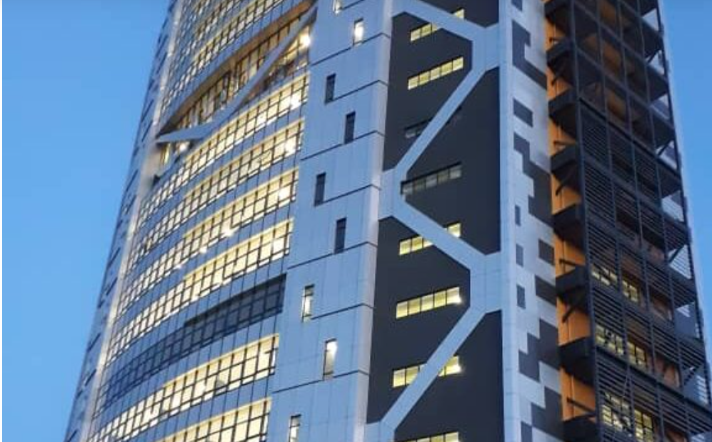
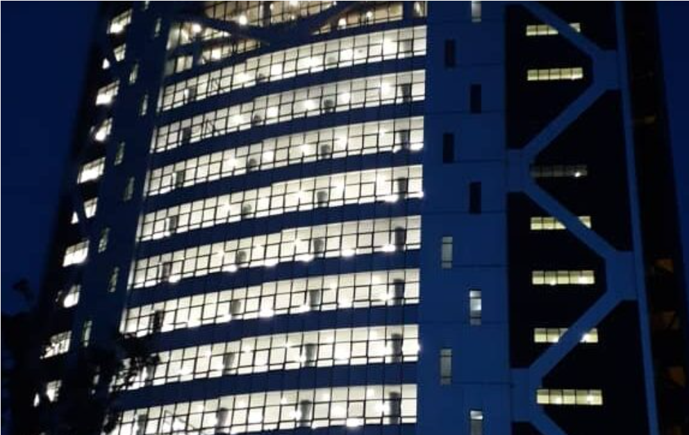

CONSULTANCY SERVICES FOR DESIGN & SUPERVISION OF THE UGANDA REVENUE
Project Name:
CONSULTANCY SERVICES FOR DESIGN & SUPERVISION OF THE UGANDA REVENUE.
Project Duration:
2015-2019
Uganda Revenue Authority (URA) intends to construct new office premises for its headquarters. The new office premises are to be located on Plot M.193 Kinawataka Road, Nakawa Industrial Area. The plot covers 6.13 hectares. The design of the office space involved:
A new office block of about 8,000m2 of built space; Refurbish its existing Main Building of approximately 1,200m2 of space; Renovate the existing Information Technology Building-Long Room of approximately 120m2 of space; Design for the parking space for the entire Agency; and Construct a Waste Water Treatment and Recycling system to meet the stakeholders demands
Description of the main deliverables/outputs
Environmental and Social Impact Assessment; Conducting Socio-Economic Survey and Condition Assessment of Existing Facilities; Traffic Surveys; Cadastral and Topographic Surveys; Hydraulic and Hydrological Studies; Soils and Materials Investigation; Structural Designs; Electrical, ICT, Mechanical, Water Supply and Sanitation; Architectural Designs/Drawings; and Preparation of Bills of Quantities and Cost Estimates;
Positions of senior staff involved
The KOB project will impact the Ugandan people and as such they are the key stakeholders. However, the following are the identified specific stakeholders;



Back to project